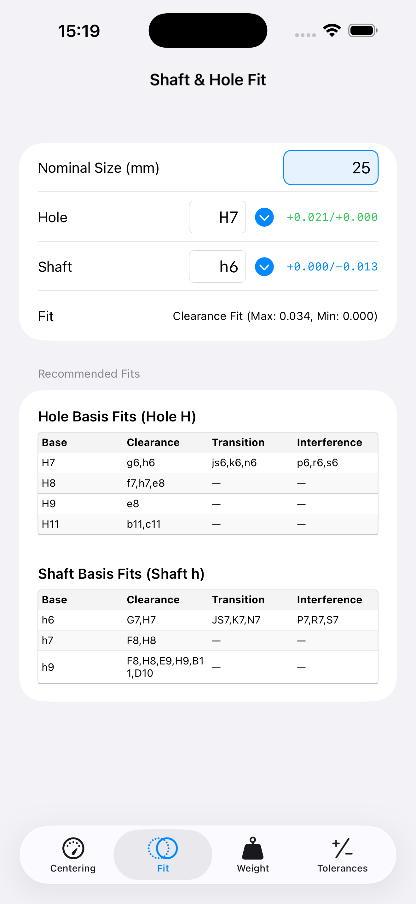

Centrez plus vite. Calculez ajustements et tolérances. Estimez le poids du brut.
CNC Workpiece Calculator est une boîte à outils pratique iPhone/iPad pour les usineurs : centrage par palpeur sur plusieurs formes, vérification des ajustements arbre/alésage ISO, références de tolérances générales et estimation rapide du poids des matériaux courants.

Ce que ça vous permet de faire
Réduisez les calculs manuels pendant le réglage et le contrôle. Gardez votre flux de travail fluide grâce à des calculs sur l'appareil, fiables même la machine en marche.
Centrage par palpeur
Saisissez les points X/Y mesurés (avec compensation du diamètre du palpeur) et calculez le centre/la géométrie pour cercle, rectangle, ellipse, rainure droite et double cercle.
Ajustements arbre–alésage
Vérifiez rapidement la taille nominale + les classes de tolérance (ex. H7/h6) et visualisez le résultat de l'ajustement en choisissant les types courants d'alésage/arbre.
Estimation du poids
Estimez le poids des formes courantes (plaque, tube, barre, anneau…) avec préréglages de matériaux, quantités et unités métriques/impériales.
Tolérances générales
Référence des tolérances dimensionnelles et géométriques (rectitude/planéité, perpendicularité, faux-rond circulaire, etc.) avec des résultats clairs pour l'atelier.
Conçu pour iPhone et iPad
Saisies tactiles et outils en onglets pour passer du centrage aux ajustements, au poids ou aux tolérances sans perdre le contexte.
Hors ligne par conception
Sans compte, sans pub, sans SDK de suivi. Les calculs s'exécutent sur l'appareil, même dans les environnements réseau restreints.
Tutoriel rapide
Quatre flux de travail courants — centrage, ajustements, poids et tolérances.




Pour qui ?
Ateliers de sous-traitance
Accélérez le centrage quotidien et les vérifications rapides, sans tableur.
Prototypage & R&D
Itérez plus vite sur les montages et gardez les calculs de mesure cohérents d'une série à l'autre.
Formation
Aidez les nouveaux opérateurs à comprendre les ajustements, les tolérances et les résultats géométriques.
Questions fréquentes
L'app nécessite-t-elle Internet ?
Non. Les calculs principaux fonctionnent hors ligne.
Collecte-t-elle des données ?
Aucun SDK d'analyse ou de suivi n'est utilisé. Consultez la politique complète sur la page Confidentialité.
Puis-je l'utiliser sur iPad ?
Oui — l'interface est conçue pour les flux iPhone et iPad.
Où signaler un bug ou demander une fonctionnalité ?
Écrivez à wangning.engineer@outlook.com.
Télécharger
Prêt à l'utiliser sur le sol de l'atelier ?